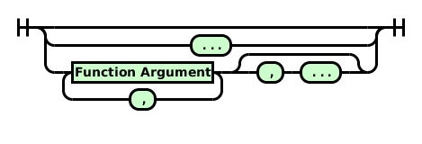

While previously the smallest unit of code was the script, the new source format and compiler works on a basis of files. Each file contains a package declaration, and a single object definition.
An object is a collection of features, functions and scripts. These may be defined in any order.

A feature defines an attribute on the object being defined. Like a variable declaration, a function definition includes a type which should be respected by any functions on the object, and by any child objects. The default value for a feature should also match its type.
There are a few additional restrictions on function declarations that are not present in the current compiler:
Script Body:
A script is composed of zero or more Statements, followed by zero or more Function Definitions. If there are any Statements outside of a formal function declaration, they will be wrapped in an implicit function that takes no arguments.
When a Script is invoked, either by another Script or by the executing environment, the first function (implicit or explicit) is called, with the parameters being passed to the Script being passed to the function.
Function Arguments:
Function Argument
A function definition optionally specifies the return type of the function. If none is provided, ’Dynamic‘ is assumed. The definition must provide a name for the function, followed by an open parenthesis, and the formal parameters to the function if any.
Each parameter may provide a type (dynamic if omitted), and a default value. This default value can be an arbitrary expression, which is evaluated on function entry. After a default value is provided for a parameter, all following parameters must also have default values. The parameter list may also end with an ellipsis, which indicates a variadic function. In this case, the complete list of parameters passed to the function can be accessed using the Parameters() built-in function.
Function Void foo( Integer )Functions are composed of one or more statements, which are detailed here.
goto and LabelsThe goto command will cause program flow to jump to the specified label in the current function. Although jumping out of loops is legal, attempting to jump into a loop is illegal.
if statementsThe if statement evaluates its argument. If the argument evaluates to a ‘true’ value (see Types for information on which values are considered ‘true’), it will evaluate the following block of statements. Otherwise, it will evaluate the next elseif statement, if any, or the else block, if present and there are no remaining elseif blocks. An elseif statement similar executes its contents if its argument evaluates to true, but will only execute if the arguments of all preceding if and elseif statements evaluated to false.
switch statementsThe switch statement evaluates an expression, and chooses a case block to execute as a result of the expression's value. Case blocks are considered in order, with the value compared against the sequence of expressions associated with each case. Only integers and strings may be used in a case sub-statement.
If a case is matched, its contents are executed. There is no fall-through; when the end of the case statement is reached, program flow continues outside of the switch statement.
If no cases are matched, and the switch statement has a default block, this block will be executed. The default block must be the last block in the statement.
while statementsThe while statement executes a block of code if the provided test expression evaluates to a true value. At the end of the block, the test expression is evaluated again. If it is still a true value, then the block is executed again. This process repeats until the end of the block is reached and the test expression evaluates to a false value. If the test expression is not true at the start, the block will never be executed.
If a continue statement is executed while inside of a while loop, execution passes to the test expression evaluation at the end of the loop. If a break statement is used, the while statement is exited with no further evaluation of the test expression.
repeat statementsThe repeat statement is similar to the while statement, except the block is executed once before the test expression is evaluated.
for loopsfor loopsThe behaviour of this loop is similar, although not identical, to the while loop:
Init
while Test
Body
Increment
end
The differences lie in the behaviour of continue: it will always evaluate the Increment expression before the Test, unlike in the while-loop above, where it would be skipped.
This for loop takes an iterable value like a List, Record, RecArray or Assoc and binds its values sequentially to the given identifier. It is equivalent to the code:
Dynamic temporary = Expr
Integer i
Integer len = length( temporary )
for ( i = 1; i <= len; i += 1 )
ID = temporary[ i ]
Body
end
for loopsThis for loop assigns a sequence of values to an variable, either ascending (uses to), or descending (uses downto). If ascending, the loop assigns the begin value to the variable, and increments it by the value of the By expression, if given, or 1 otherwise, every iteration until the value of the variable is greater than the end value.
If descending, the value is decremented by the By expression, if given, or 1 otherwise, until the value is less than the end value.
If the value of the variable is modified in the body of the loop, the new value is the one that will be incremented or decremented by the loop.
OScript has two end-of-statement markers: a new line, or a semicolon. Either can be used in scripts or functions, which often makes writing strings to be passed to Compiler.Compile() easier, but only new lines can be used outside of scripts.
Expressions evaluate to values. They may also have side effects, in the cases of variable assignment or function execution.
An XLate expression consists of a group name and an entry name. The XLate's value is computed at run-time, according to the language settings of Content Server. While they evaluate to strings, they are their own value. For more details, see XLates in the Types section.

For more information on the behaviour of the unary and binary operators, see the section on operators in the Behaviour/Semantics section.
List literals create a new List value when evaluated. The expressions that make up the elements of the list are evaluated in order.
Assoc literals create a new Assoc value when evaluated. The key/value expression pairs that make up the elements of the list are evaluated in order.
List comprehensions are a way of building a list from another list. See this Wikipedia article for examples of list comprehensions in other languages.
The object name is resolved at run time to an object reference value, pointing to the object with the given name.
If you declare a variable in a nested scope that shares the name of an already-declared variable, the new declaration will shadow the old variable inside of that scope: all reads and writes will refer to the new variable until the end of the scope where it was declared, or another variable declaration shadows it. This is true even if the new variable is of a different type.
Integer i = 3
echo( i ) // Outputs 3
if i > 2
String i = "2"
echo( i ) // Outputs 2
end
echo( i ) // Outputs 3